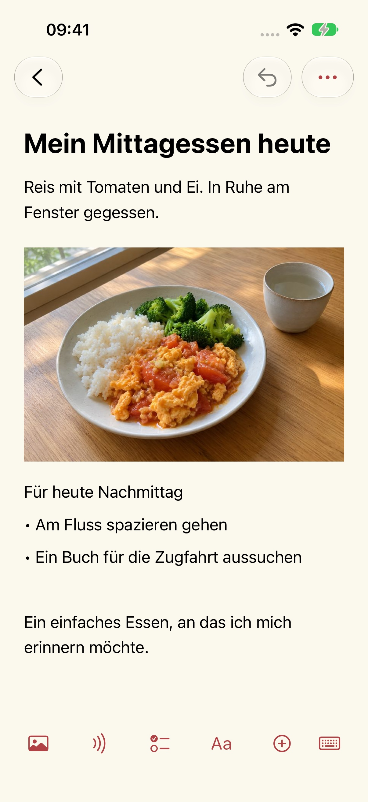
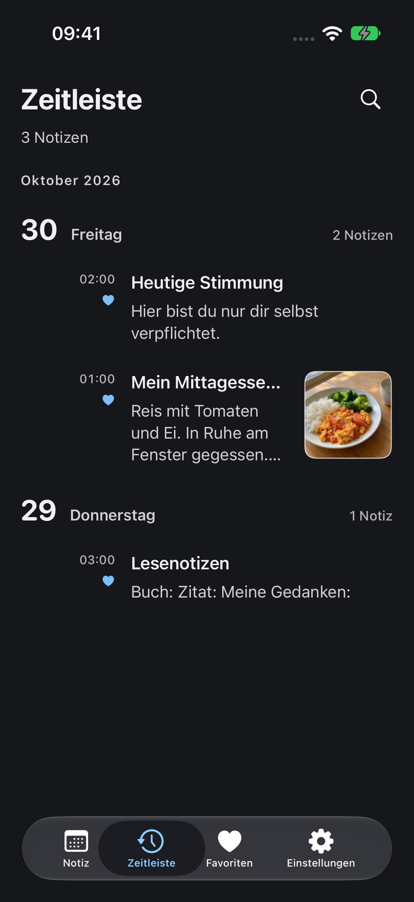

Hilfe und Support
Aktualisiert: 2026-10-29
Warum ich Mowyns gemacht habe
Ich wollte ein einfaches, gutes und völlig kostenloses Werkzeug für meine Notizen. Auch nach langer Suche hatte ich nichts gefunden, das zu mir passte. Deshalb habe ich Mowyns entwickelt. Ich nutze es selbst jeden Tag.
Heute bekommt seine eigene Seite
Wenn ich mein Notizbuch öffne, möchte ich heute sehen. Der Kalender zeigt die Einträge eines Tages, sodass gestrige Notizen bei gestern bleiben. Frühere Einträge sind weiterhin da: Wähle ein Datum oder blättere durch die Zeitleiste. So bleibt heute Platz für Neues.




Notiz
Ein Foto vom Mittagessen und ein paar Worte dazu. Eine Idee, die du irgendwann umsetzen möchtest. Text, Fotos und Aufnahmen können in derselben Notiz stehen.
Datum
Lege vor einer Reise Zugdaten, Sitzplätze, Ticket-Screenshots und Ausflugsziele beim passenden Datum ab. Öffnest du später diesen Tag, liegt dein Plan bereit. Aus den Notizen mehrerer Tage wird ein einfacher Reiseplan.
Kalender
Ziehe am oberen Rand der Tagesliste einmal nach unten, um den Kalender zu öffnen. Ziehe erneut, um die Schnellsuche aufzurufen. Bei eingeklapptem Kalender wechselst du durch Wischen auf der Datumsüberschrift nach links oder rechts zum nächsten oder vorherigen Tag.
Erscheinungsbild
Wähle eine Themenfarbe und ein helles oder dunkles Erscheinungsbild. Textgröße und Zeilenabstand lassen sich anpassen.
Neue Notiz
Wähle „Neue Notiz“ und gib einen Titel und Text ein. Über die Werkzeugleiste unten im Editor fügst du Bilder, Aufnahmen, Checklisten, Tabellen und Dateien hinzu.
Backup und Übertragung
Notizen werden auf diesem Gerät gesichert. Unter Einstellungen → Datenverwaltung → Backup und Übertragung kannst du normale oder verschlüsselte Backups exportieren und importieren. Bewahre eigene Backups auf; eine automatische Synchronisierung gibt es nicht.
Aufnahmetranskript
Die App fragt nur beim Fotografieren, Scannen oder Aufnehmen nach Kamera- bzw. Mikrofonzugriff. Fotos und Dateien wählst du über die Systemauswahl aus. Auch ohne diese Berechtigungen kannst du Textnotizen schreiben. Die Transkription benötigt die Systemberechtigung zur Spracherkennung und erfolgt ausschließlich auf dem Gerät. Wird das Gerät oder die Sprache nicht unterstützt, bleibt die Aufnahme erhalten und die Transkription wird als nicht verfügbar angezeigt. Die App weicht nicht auf Cloud-Erkennung aus. Berechtigungen kannst du in den Systemeinstellungen entziehen.
Zuletzt gelöscht
Unter Einstellungen → Datenverwaltung → Zuletzt gelöscht kannst du Notizen wiederherstellen. Nach endgültigem Löschen brauchst du ein zuvor exportiertes Backup. Der Entwickler besitzt keine Kopie deiner Notizen.